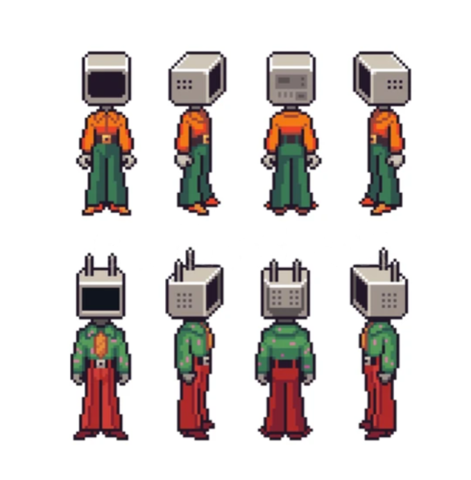

Unreal Engine
Conocido por sus capacidades visuales avanzadas. Se utiliza en proyectos 3D, experiencias interactivas y producciones de gran escala.
C++Los videojuegos combinan herramientas de programación con disciplinas artísticas. La tecnología construye las reglas; el arte les da identidad.
Un motor de videojuegos reúne herramientas para crear escenas, controlar objetos, reproducir sonidos y ejecutar la lógica del juego.
Conocido por sus capacidades visuales avanzadas. Se utiliza en proyectos 3D, experiencias interactivas y producciones de gran escala.
C++Motor versátil para proyectos 2D y 3D, juegos móviles y experiencias multiplataforma. Su ecosistema ofrece numerosos recursos.
C#Motor de código abierto con herramientas para desarrollar juegos 2D y 3D. Es una alternativa flexible para proyectos independientes.
GDScriptLos lenguajes permiten definir cómo se comportan los personajes, cómo responden los controles, qué ocurre al completar un nivel y cómo interactúan los jugadores.
Mediante instrucciones y algoritmos, los programadores establecen cómo se comportan los personajes, cómo responden los controles, cómo funcionan las físicas y qué sucede cuando un jugador completa un objetivo o interactúa con el entorno.Cada lenguaje tiene sus propias características, ventajas y aplicaciones.
La dirección artística define la apariencia y la atmósfera de un juego. No existe un único estilo correcto.

Explora ideas visuales antes de producir los recursos finales.

Construye imágenes mediante pequeños bloques de color.

Crea personajes, objetos y escenarios tridimensionales.

Organiza espacios, recorridos, retos y descubrimientos.
Frase del filosofo Lao Tse, donde nos sugiere que el arte y la música no son solo sonidos externos, sino una manifestación profunda del ser que comunica lo intangible con el entorno y el cosmos.
En otras palabras las bandas sonoras, los efectos y las voces comunican emociones, indican acciones y hacen que los escenarios se sientan vivos, lo que hace que la experiencia al jugar sea envolvente
Si te gustaria intentar escuchar alguna banda sonora aqui te dejo recomendaciones: